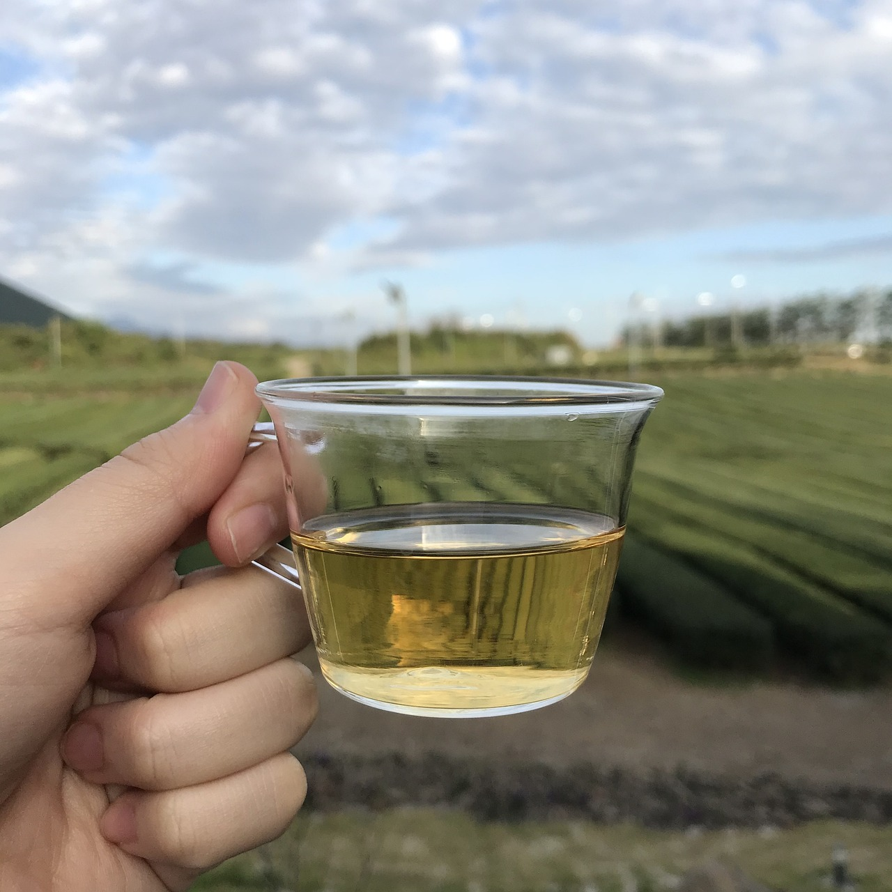

오설록은 주식회사 오설록의 차 브랜드로 당시 태평양화학 창업주 고 서성환 회장의 지시로 황무지에 녹차밭 가꾸기 사업을 시작하여, 1983년 3월 황무지 49만 5000m²(약 15만 평)을 개간하여 다원과 녹차 공장을 만들었다. ‘오설록’이란 이름은 '눈 속에서도 피어나는 녹차의 생명력에 대한 감탄의 표현'과 ‘origin of sulloc’, 즉 이곳이 설록차의 고향이란 뜻을 담고 있다고 한다.
